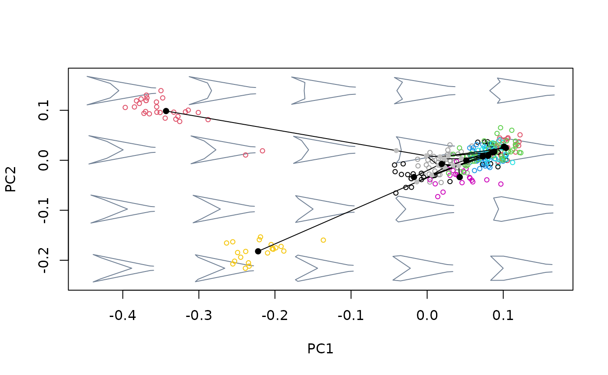

Project phylogenetic relationships among a set of shapes (representing the consensuses of phhylogenetic terminals) into an existing bivariate morphospace.
proj_phylogeny(mspace, tree, pipe = TRUE, ...)An "mspace" object.
A "phylo" object containing a phylogenetic tree.
Logical; is the function being included in a pipe?
Further arguments passed to graphics::lines().
If a plot device with a morphospace is open, shapes representing the nodes
of the phylogenetic tree and lines connecting them and tips are projected into
morphospace. If pipe = FALSE scores for nodes and tips of the phylogeny
are returned invisibly. If pipe = TRUE the supplied mspace
object will be modified by adding a new $phylo_scores and $phylo
slots as well as a number of graphical parameters, and returned invisibly.
The purpose of this function is twofold. First, it is meant to transform
a morphospace into a phylomorphospace by infusing phylogenetic structure into
the former. To this end, a $gr_centroids slot matching the tip labels
from tree needs to be present (either upstream in the pipeline or already
incorporated into an existing mspace object). Second, this function can be
used to retrieve the scores corresponding to nodes of the phylogenetic tree, which
can in turn be used to compute the associated shapes using rev_eigen(). The
position of these shapes in morphospace is estimated using the squared-changes
parsimony algorithm as performed by phytools::fastAnc().
#load and extract relevant data, packages and information
library(magrittr)
data("tails")
shapes <- tails$shapes
species <- tails$data$species
sp_shapes <- expected_shapes(shapes, species)
tree <- tails$tree
links <- tails$links
#generate basic morphospace, add sampled shapes, species mean shapes, and
#phylogenetic structure
mspace(shapes, links = links, mag = 0.7, axes = c(1,2), cex.ldm = 0) %>%
proj_shapes(shapes = shapes, col = c(1:13)[species], pch = 1, cex = 0.7) %>%
proj_consensus(shapes = sp_shapes, pch = 21, bg = 1:13, cex = 2) %>%
proj_phylogeny(tree = tree)
